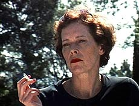

|
SYLVIA KRISTEL - PARIS
Manon de Boer | NL 2003 | 40 min.
Format: Beta SP
Material: Super8
Original language : French
Script: Manon de Boer
Camera: Manon de Boer
Editing: Inneke Van Waeyenberghe,
Manon de Boer
Sound: George Van Dam
Music: George Van Dam
With Sylvia Kristel
Production: Manon de Boer
Prix Georges de Beauregard, Marseille 2004
German Premiere
This portrait of the actress Sylvia Kristel takes us through the twists and turns of her life story crowned with an uneasy glory. With infinite modesty, as opposed to sensationalism, it evokes an era, the cinema, a life absorbed in show business, and some cities. It is in the name of this modesty that the pictures filmed in Super-8 falter and come up against the difficulty of putting together the coherent story of a person’s existence.
Manon de Boer, born in 1966 in Kodaicanal/India. She studied at the Akademie van Beeldende Kunsten in Rotterdam and at the Rijksakademie van Beeldende Kunsten in Amsterdam. Now she lives and works in Brussels.
Films (selection): Laurien 1996 | Recalling Names and Places 1999 | Sylvia Kristel – Paris 2003 | Resonanting Surfaces 2005 | Presto, Perfect Sound 2006
Expositions (selection): Artists in Focus, Vaila do Cone, Portugal 2005 | Resonanting Surfaces, Galerie Jan Mot, Brussels 2005 | Sylvia Kristel, Jan Mot 2003 | Laurien, SKOR, Amsterdam 2002
Group expositions (selection): Don Quijotte, Witte de With, Rotterdam 2006 | Thomas Kratz, Goethe Institut, Casablanca 2006 Documentary Creations, Kunstmuseum, Luzern 2005
back
|